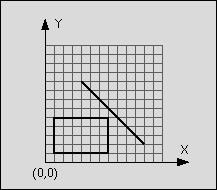
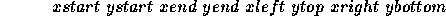
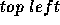
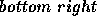

| Intersection |
You are to write a program that has to decide whether a given line segment intersects a given rectangle.
line: start point: (4,9)end point: (11,2)
rectangle: left-top: (1,5)
right-bottom: (7,1)

Figure: Line segment does not intersect rectangle
The line is said to intersect the rectangle if the line and the rectangle have at least one point in common. The rectangle consists of four straight lines and the area in between. Although all input values are integer numbers, valid intersection points do not have to lay on the integer grid.
The input consists of n test cases. The first line of the input file contains the number n. Each following line contains one test case of the format:

where (xstart, ystart) is the start and (xend, yend) the end point of the line and (xleft, ytop) the top left and (xright, ybottom) the bottom right corner of the rectangle. The eight numbers are separated by a blank. The terms  and  do not imply any ordering of coordinates.
For each test case in the input file, the output file should contain a line consisting either of the letter "T" if the line segment intersects the rectangle or the letter "F" if the line segment does not intersect the rectangle.
1 4 9 11 2 1 5 7 1
F